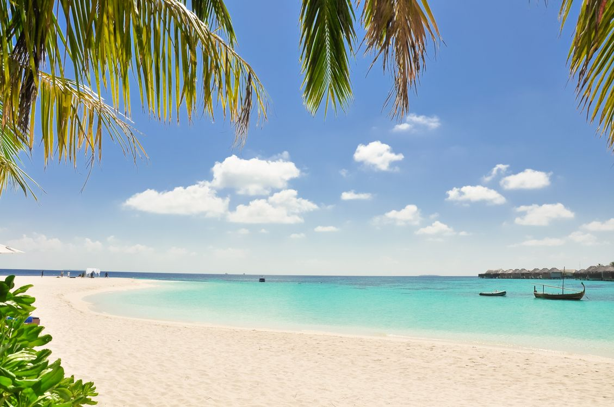
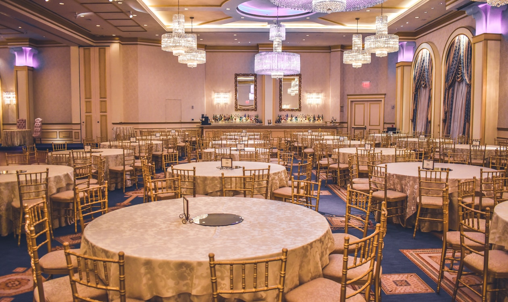
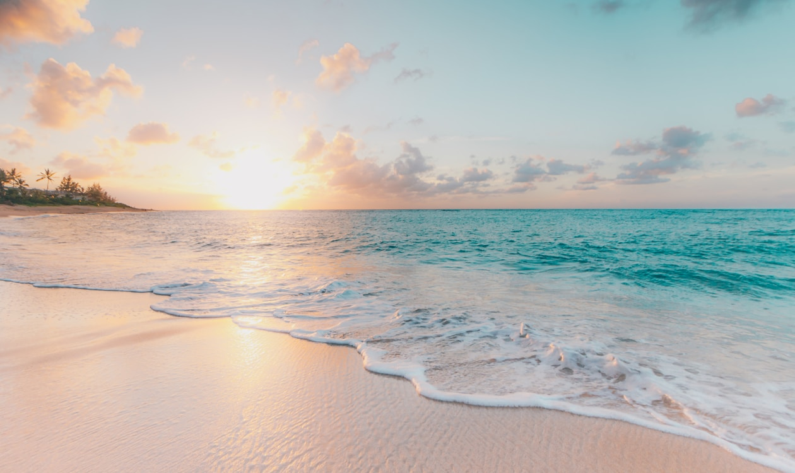

Why Batam? Your Gateway to Southeast Asia
World-class venues, 45 min from Singapore, unmatched value for corporate retreats and investment.
Venues
Premium Retreat Venues




Comparison
Batam vs Alternatives
| Batam | Bintan | Singapore | |
|---|---|---|---|
| Ferry from SG | 45 min | 60 min | — |
| Resort (per night) | Budget-friendly | Mid-range | Premium |
| Team Activity (per pax) | Most affordable | Moderate | Premium |
| Golf (per round) | Great value | Mid-range | Premium |
| Visa Required | No | No | — |
Investment Gateway
Why Batam is a Strategic Investment Destination
Beyond retreats, Batam is the gateway to Indonesia's growth story — ideal for market study visits and investment exploration.
Special Economic Zone
Batam is a designated KEK (Kawasan Ekonomi Khusus) with tax incentives, streamlined licensing, and customs privileges for investors.
SIJORI Growth Triangle
Singapore-Johor-Riau corridor — one of Asia's most dynamic cross-border economic zones with USD 100B+ trade flows.
Industrial & Manufacturing Hub
Over 1,200 foreign companies across electronics, shipbuilding, petrochemicals, and logistics in 10+ industrial estates.
Proximity to Singapore
45-minute ferry = same-day business meetings. Singapore HQs use Batam for cost-efficient operations and market access.
Real Estate & Infrastructure
Industrial land from USD 30/sqm, new port facilities, airport expansion, and digital infrastructure upgrades underway.
Market Study Visits
We arrange curated investment tours — factory visits, government briefings, site inspections, and partner matchmaking for serious investors.
SIJORI Deep Dive
The SIJORI Growth Triangle
The Singapore-Johor-Riau (SIJORI) Growth Triangle is one of Southeast Asia's most established cross-border economic partnerships. Spanning three nations, this corridor has generated over USD 100 billion in annual trade and attracted more than 1,200 multinational companies seeking strategic advantages in cost, logistics, and market access.

The Corridor at a Glance
A strategic economic zone linking Singapore's financial hub with Johor's manufacturing base and Riau Islands' industrial parks — just 45 minutes by ferry from Singapore to Batam.
World-Class Logistics Hub
Batam's Batu Ampar Port handles over 3 million TEUs annually, providing direct shipping routes to major Asian markets. The proximity to Singapore's port ecosystem creates a seamless supply chain advantage for manufacturers and exporters.
Strategic Port Infrastructure
Modern container terminals, free-trade zone facilities, and customs-free processing zones make Batam a preferred gateway for companies operating within the ASEAN economic community.
Thriving Business Ecosystem
From Nongsa Digital Park's tech startups to Batamindo Industrial Park's electronics giants, the island offers a diverse business landscape with competitive labor costs and strong government support for foreign direct investment.
USD 100B+
Annual trade volume across the SIJORI triangle, driven by manufacturing, electronics, and petrochemical exports.
1,200+
Foreign companies with operations in the Riau Islands, including Fortune 500 brands in electronics, shipbuilding, and logistics.
45 Min
Ferry ride from Singapore to Batam — enabling same-day business meetings, factory visits, and investment site inspections.
Real Success Stories
Companies Thriving in Batam
Global brands have already chosen Batam as their strategic base in Southeast Asia. Here's why they keep expanding.
Seamless Connectivity
Batam's modern ferry terminals process thousands of daily commuters and business travelers, creating a bridge between Singapore's capital markets and Batam's production capabilities.
Electronics & Semiconductors
Major semiconductor manufacturers have operated in Batam for over two decades, leveraging the island's tax-free zone status and skilled workforce to produce components for global supply chains.
Shipbuilding & Offshore
Batam is Southeast Asia's largest shipbuilding hub, with facilities capable of constructing vessels up to 100,000 DWT. International shipyards have invested hundreds of millions in expanding their Batam operations.
Digital & Tech Startups
Nongsa Digital Park, Batam's tech hub, houses over 100 tech companies and startups benefiting from high-speed submarine cable connectivity to Singapore and competitive operating costs.
Petrochemicals & Energy
Major petrochemical operators have established refineries and storage terminals in Batam, serving the broader Southeast Asian energy market through strategic deep-water port access.
Hospitality & Tourism
International hotel chains and resort operators continue to expand in Batam, driven by 1.2 million+ annual visitors from Singapore and growing domestic tourism demand.
Ready?
Convinced? Let's Make It Happen
Get a custom proposal in 24 hours. No obligations, no pressure.
Request Proposal